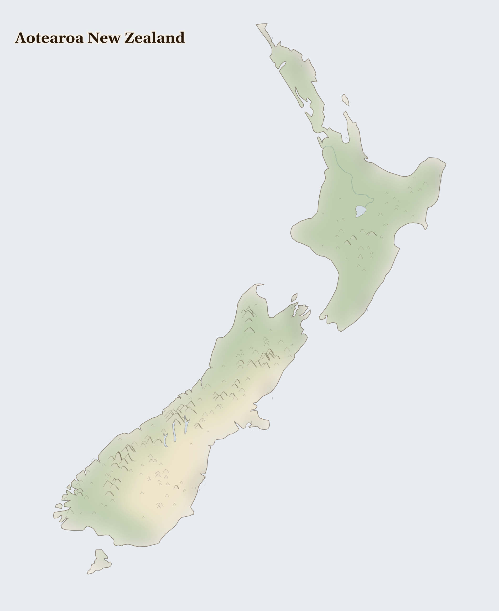

Aotearoa New Zealand
New Zealand
Australasia
Two long green islands at the bottom of the world, where mountains rise straight out of the sea, steam drifts up from the ground, and it is morning here before almost anywhere else on Earth. The first people, the Māori, voyaged here across the open ocean in canoes, steering by the stars.
How Life Works Here
Green hills are dotted with more sheep and cows than there are people — the milk and butter travel in giant ships to the other side of the world. Forests of huge old trees grow here, and the warm underground makes hot springs people have bathed in for hundreds of years.
Dairy farming families (12,000 farms, consolidating under corporate ownership), Māori communities with customary freshwater rights (te mana o te wai) subordinated to irrigation consents, …
Rural communities downstream of plantation forests (Māori and Pākehā), Foreign-owned forestry investors (harvest-and-export model, minimal local processing), Māori landowners with Treaty settlement forestry assets …
Pacific Island seasonal workers (14,000+/year) picking fruit and pruning vines under employer-tied visas, NZ horticultural and viticulture operations dependent on seasonal labour, Pacific Island …
What Is Happening
This is a peaceful, lucky land, and that is worth a thank-you. The gentle question here is about care and fairness: so many cows can make the rivers dirty, and the Māori — who have looked after this land the longest — are working to protect the waters their ancestors knew. In a wonderful step, this country gave one of its rivers the same rights as a person, so it must be cared for like a living being.
Something Wonderful
In some dark caves here, the ceilings glow with thousands of tiny blue lights — living glowworms, like a night sky underground. And a round brown bird called the kiwi, with whiskers and no proper wings, snuffles through the forest at night; the people love it so much they call themselves Kiwis too.
Let's Do Something Together
Make a Wind Flag
Tie a ribbon or strip of cloth to a stick and hold it up outside. Which way does the wind blow? Wind carries rain clouds to thirsty places — but also carries dust and smoke. In some countries, dust storms cover whole cities and people cannot breathe or see.
- stick or pencil
- ribbon or strip of cloth
For grown-ups
Atmospheric dust transport from desertifying regions affects air quality, respiratory health, and solar radiation hundreds of kilometres downwind. Saharan dust reaches Europe; Asian dust reaches North America.
Let Us Pray Together
God, calm the storms. Protect families when the dust and wind come.
Leader: We pray for the gifts of this place. For the gifts of Aotearoa New Zealand.
All: Lord, hear our prayer.
Leader: We pray for what our comfort costs elsewhere. For what comfort here costs elsewhere: the metals in our machines and the goods in our houses; fo..
All: Lord, hear our prayer.
Leader: We pray for those who bear the cost here. For those who bear the cost within this plenty.
All: Lord, hear our prayer.
Leader: We pray for quietness. This place asks of us not alarm but attention.
All: Lord, hear our prayer.
The Lord is my light and my salvation; whom then shall I fear? The Lord is the strength of my life; of whom then shall I be afraid?
Collect
Almighty God, who called your Church to bear witness that you were in Christ reconciling the world to yourself: help us to proclaim the good news of your love, that all who hear it may be drawn to you; through him who was lifted up on the cross, and reigns with you in the unity of the Holy Spirit, one God, now and for ever.
Amen.
Talk About It
This country decided a river should be treated like a living person. If a river near you could talk, what do you think it would ask you for?
One Thing We Can Do
Learn a Māori greeting: "Kia ora" (say it KEE-ah OR-ah) — it means be well, be alive. Say it to someone today, and thank God for rivers and for the people who protect them.